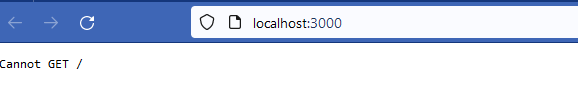
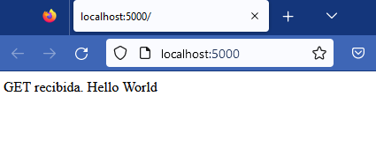
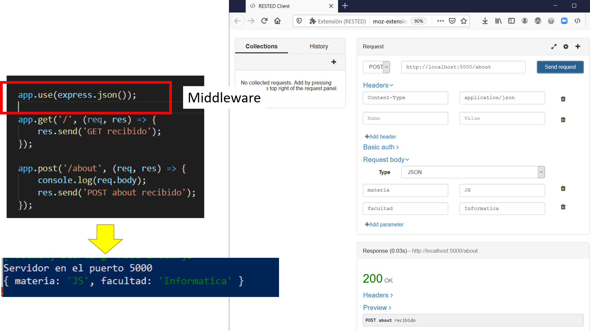
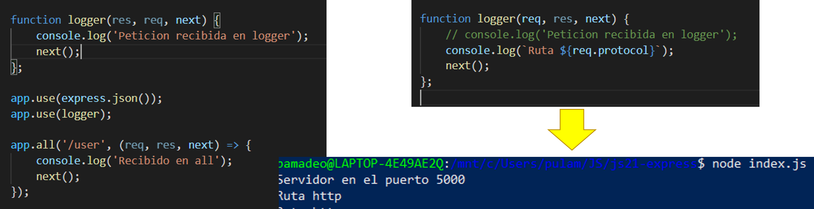
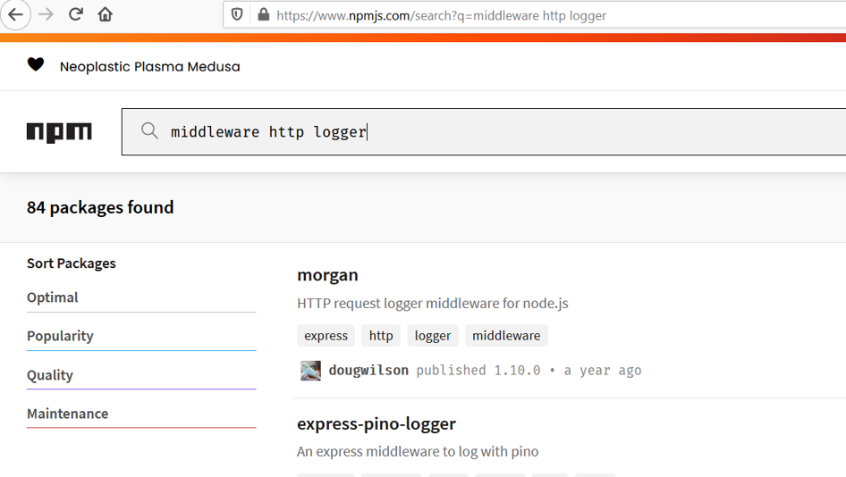

Seminario de Lenguajes. JavaScript
JS - Server Side
Cuando programos una aplicación Web server-side, estamos programando una aplicación que reciba peticiones HTTP del navegador o cliente y retorne datos.
La aplicación determina qué datos retornar según la acción a ejecutar de acuerdo a la estructura de la URL y la información indicada en la misma (opcional) según los métodos GET y POST .
Según la acción, puede acceder a una base de datos o a un archivo para atender la petición y retornar en un HTML los datos solicitados.
Modelo MVC
- Patrón de arquitectura de software para separar los datos y la lógica de negocio de su representación y el módulo encargado de gestionar los eventos y las comunicaciones.
- Modelo: Es la representación de la información.
- Controlador: Responde a eventos (usualmente acciones del usuario) e invoca peticiones al 'modelo' . Intermediario.
- Vista: Presenta el 'modelo' (información y lógica de negocio) en un formato adecuado para interactuar
Modelo MVC

Stack MEAN y MERN
Permiten crear aplicaciones Web utilizando todas herramientas JS.


Express JS
- Es el framework más popular de Node, liberado en 2010, actualmente en la versión 4.17.1
- Facilita la creación de aplicaciones Web, del lado del servidor.
- Construido a partir de NodeJS.
- Modular a través de npm, evita verbosity.
- Single thread, asincrónico
- Javascript Universal. Hisomórfico. Se comparten librerías, entre el cliente y el servidor. Por ejemplo timing, loadge, o fechas.
Express JS
- Permite escribir manejadores de rutas (URLs) para los diferentes verbos HTTP.
- Se integra con renderizaciones de vistas para generar respuestas a través de introducir datos en plantillas.
- Añade procesamiento de peticiones middleware en cualquier punto dentro del manejo de la petición.
- Aplicaciones MVC. Model View Controler.
- Es muy sencillo de aprender los conceptos y utilizar un servidor Web.
- Es no dogmático (unopinionated).
Express JS
Posee métodos para especificar que función usar dependiendo del verbo usado en la petición y la estructura de la URL (ruta).
También tiene métodos para especificar plantillas (views) que se usaran para armar el documento HTML con la respuesta.
Los middlewares se utilizan para añadir funcionalidad como sesiones de usuario, cookies, logging, etc.
Express JS - instalación
Es necesario instalarlo ejecutando npm
npm install expressMódulos en JS - npm
Un módulo es una librería de JS que puede ser importada en otro código usando require() También podemos crear nuestros propios módulos, cuanto más modular más óptimo para reusar y encapsular.
Express JS - instalación

Creando un servidor

Creando un servidor

Creando un servidor
Haciendo una petición desde un cliente a nuestro servidor obtenemos:
¿Por qué?
Creando una respuesta
Express - Rutas
Express - Enrutamiento
- Las rutas definen la navegación del usuario a partir de los verbos http.
- Determina la respuesta de una aplicación a una solicitud de cliente, establecida en la URL.
- Es la base de toda aplicación Web.
- Es necesario configurar un manejador.
Express - Enrutamiento
Soporte a los métodos de direccionamiento que se corresponden con los métodos HTTP: get, post, put, head, delete, options, trace, copy, lock, mkcol, move, purge, propfind, proppatch, unlock, report, mkactivity, checkout, merge, m-search, notify, subscribe, unsubscribe, patch, search y connect.
Express - Enrutamiento
Express - Enrutamiento
Es posible incluir expresiones regulares como * y ?
 Guide Express JS - Routes
Guide Express JS - Routes
Express - Enrutamiento - app.all()
No se deriva de ningún método HTTP. Este método se utiliza para cargar funciones de middleware en una vía de acceso para todos los métodos de solicitud.
El manejador se ejecutará para las solicitudes a “/secret”, tanto si utiliza GET, POST, PUT, DELETE, como cualquier otro método de solicitud HTTP.
Express - Enrutamiento
app.get('/user', (req, res) => {
res.json({
username: 'pamadeo',
lastname: 'Amadeo'
});
});

Express - Enrutamiento - req.body
Objeto JS que provee express y permite gestionar los datos enviados por el cliente

Express - Enrutamiento
app.post('/user', (req, res) => {
console.log(req.body);
});
Y también:
// Para indicarle a express que le estamos enviando un objeto JSON
app.use(express.json());
Cuando una petición coincida con el content-type entiende que es un json e interpreta el objeto
Express - Rutas dinámicas
Permite manipular parámetros en la URL a través del objeto Request.params

Express - Rutas dinámicas

Express - Middleware
Express - Middleware
Es un manejador de peticiones, útil para procesar datos antes de ejecutar las rutas. Por esto es que se incluyen al inicio.
Funciona para todas las rutas definidas en la aplicación.
Por ejemplo, el logueo o la autenticación de usuarios.
Se llaman en el orden que son declaradas, en algunos casos el orden es importante.
Express - Middleware
Express - Middleware
- Módulos de terceras partes, como Morgan
- Para subir imágenes, cambiar datos, autenticación.
- npmjs.com/
- Un ejemplo de middleware es morgan para loguear todas las peticiones.
app.use(morgan('dev'));
Express - Middlewares de terceros
 Middlewares soportados por el equipo de ExpressExpress - Middleware express.static
Es un middleware que se incluye en el core de Express para gestionar los archivos estáticos como css, el HTML, JS, etc.
app.use(express.static('public'));
Existen paquetes de middleware para abordar casi cualquier requerimiento, el tema es decidir cuales son los paquetes adecuados .
No necesariamente existe una única forma correcta de estructurar una aplicación y muchos ejemplos sólo muestran una parte mínima de lo que es necesario hacer para desarrollar una aplicación web.
Nodemon
Vigila el código de JS para alertar cuando este modificado el JS sin necesidad de volver a iniciarlo cada vez.
npm i nodemon -D
npx nodemon index.js
Referencias
npm middlewaresIntroducción a Express/Node. MDN Node- Anatomía de una transacción HTTP Cascada CSS
BootStrap. Wikipedia